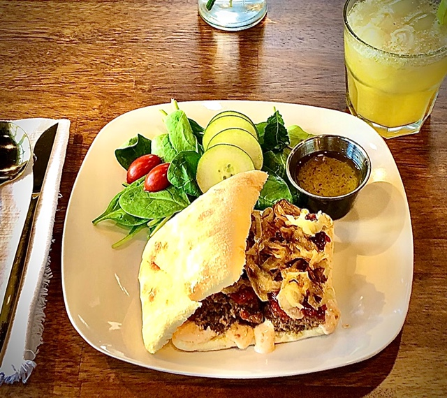

Cafe
Fresh plates, bright juices, and a table made for staying a while.
The menu is warm, uncomplicated, and built around lunch, conversation, and a slower afternoon.
The Table
Food meant to feel easy
Think crisp sandwiches, composed plates, soup on cooler days, and juices pressed to brighten the middle of the week. The room is calm, the portions generous, and the mood intentionally unhurried.
Featured Menu
What regulars come back for


Mood
Light-filled, warm, and unforced
The cafe carries the same point of view as the boutique: textured materials, gentle color, and a sense that everyday meals can still feel considered.